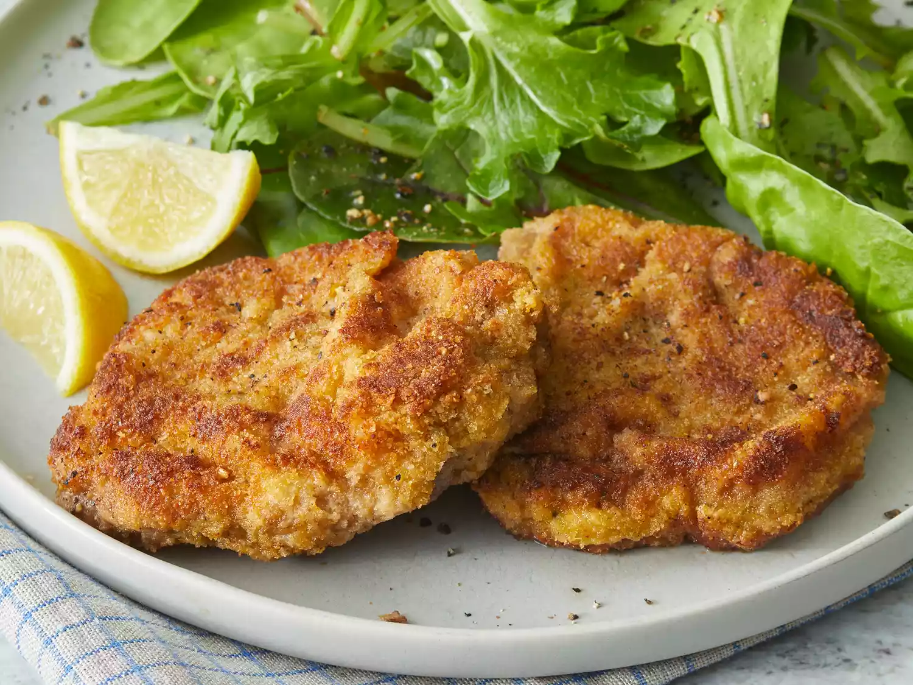

Wiener Schnitzel

Description
Wiener Schnitzel is a traditional German dish, historically made with veal, as the protein.
The following are the main ingredients involved in the preparation of this dish:
- Veal
- Cheese & Milk
- Seasonings
- Bread crumbs
- Butter
- Lemon
Cooking Steps
The steps involved in preparing this dish are as follows:
- Pound the cutlets to 1/4-inch thickness.
- Dip the cutlets in flour, then shake off the excess.
- Mix the eggs, cheese, milk, and seasonings in a bowl.
- Dip the cutlets in the egg mixture, then coat with bread crumbs.
- Refrigerate the coated cutlets for one hour or up to overnight.
- Cook the breaded cutlets until brown and transfer to a serving platter.
- Drizzle with pan juices and garnish with lemon slices.